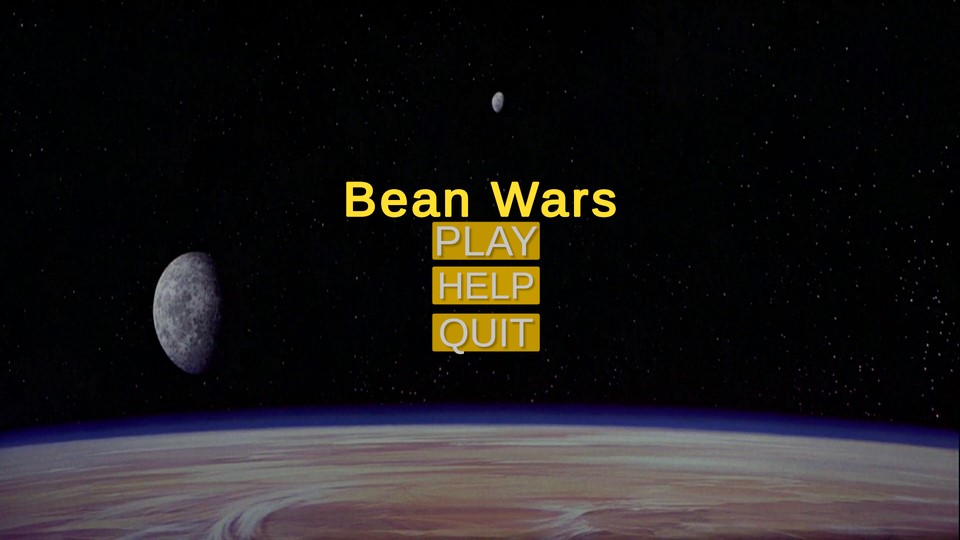

Hoe het werkt:
____________________________
Aan het begin heb je een menu met 3 knoppen. De knoppen zijn: Afspelen, Help en Afsluiten. Als je op de play-knop drukt, begint het spel. Als je op de Help-knop drukt, krijg je informatie over het spel. En wanneer u op de quit-knop drukt, stopt het programma. Als je het spel speelt, is het belangrijkste doel om 1000 punten te krijgen. Je moet 100 vijanden doden om dat aantal punten te behalen. En je moet oppassen voor de vijanden, want ze zullen op je jagen. En als ze je aanraken, krijg je schade. Als een vijand je aanraakt en hij heeft schade aangericht, wordt hij roze en bevriest hij 15 seconden. En als je één vijand doodt, draait hij zich om en valt hij op de grond. Als je sterft, krijg je een dood scherm met een herstartknop en een hoofdmenuknop. De herstartknop zal het spel opnieuw starten. En met de hoofdmenuknop keert u terug naar het menu. En als het je lukt om het aantal punten te halen, krijg je een overwinningsscherm met twee knoppen. Herstartknop en stopknop.
BeanwarsGemaakt met:
Ik heb dit spel in Unity gemaakt. Ik heb de code C# gebruikt. En ik gebruikte het programma Visual Studio 2019.
